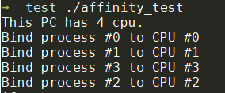
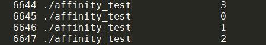

C++性能榨汁机之CPU亲和性
前言
CPU领域中最广为人知的一条定律——摩尔定律：预计18个月会将芯片的性能提高一倍。过去几十年，各大公司致力于提高CPU晶体管密度和提高CPU工作频率，使得CPU的性能提升基本符合摩尔定律。但随着工艺不断发展，晶体管密度提升已经接近物理极限，CPU工作频率也由于功耗和发热的制约而无法继续提升。在基础物理领域没有大的突破的前提下，单核CPU的性能提升日益困难，于是，各大公司将目光投向了通过增加CPU核心数提高性能领域，双核、4核、8核、16核等一系列多核CPU相继问世。
怎样合理调度多个CPU核心运行应用程序从而充分利用多核CPU的优势成为热门的研究问题，本文介绍的CPU亲和性便是解决该问题的方法之一。
什么是CPU亲和性？
引用一下维基百科的说法，CPU亲和性就是绑定某一进程（或线程）到特定的CPU（或CPU集合），从而使得该进程（或线程）只能运行在绑定的CPU（或CPU集合）上。CPU亲和性利用了这样一个事实：进程上一次运行后的残余信息会保留在CPU的状态中（也就是指CPU的缓存）。如果下一次仍然将该进程调度到同一个CPU上，就能避免缓存未命中等对CPU处理性能不利的情况，从而使得进程的运行更加高效。
CPU亲和性分为两种：软亲和性和硬亲和性。软亲和性主要由操作系统来实现，Linux操作系统的调度器会倾向于保持一个进程不会频繁的在多个CPU之间迁移，通常情况下调度器都会根据各个CPU的负载情况合理地调度运行中的进程，以减轻繁忙CPU的压力，提高所有进程的整体性能。除此以外，Linux系统还提供了硬亲和性功能，即用户可以通过调用系统API实现自定义进程运行在哪个CPU上，从而满足特定进程的特殊性能需求。
如何将CPU亲和性应用到程序中？
Linux系统中每个进程的task_struct结构中有一个cpus_allowed 位掩码，该掩码的位数与系统CPU核数相同（若CPU启用了超线程则为核数乘以2），通过修改该位掩码可以控制进程可运行在哪些特定CPU上。Linux系统为我们提供了CPU亲和性相关的调用函数和一些操作的宏定义，函数主要是下面两个：
sched_set_affinity()（修改位掩码）sched_get_affinity()（查看当前的位掩码）
除此之外还提供了一些宏定义来修改掩码，如CPU_ZERO()(将位掩码全部设置为0)和CPU_SET()(设置特定掩码位为1)。
下面采用一个以@Eli Dow提供的程序为基础修改的程序介绍CPU亲和性的使用方法，该程序使用CPU亲和性API将N（CPU数量）个进程分别绑定到N个CPU上，代码如下：
1 |
|
代码编译运行结果如下：

通过ps -eo pid,args,psr命令查看CPU与进程是否绑定成功：

可以看出，进程号6644的进程为父进程，该进程运行在CPU3上，6645、6646、6647三个子进程分别运行在CPU1、CPU2、CPU3上，可知进程与CPU绑定成功，进程只会运行在绑定的CPU上而不会被操作系统调度到其他CPU上。
CPU亲和性的应用场景
- 假如某些进程需要高密度的计算，不希望被频繁调度，则可以使用CPU亲和性将该进程绑定到一个CPU上；
- 在股票期货高频交易场景中，交易策略线程的运行时间关系到交易延迟的大小，而交易延迟1ms的差距可能就是赚钱与亏钱的差距，所以交易策略线程的优先级非常高，这时便可以为其分配一个专门用于策略计算的CPU，以避免线程被调度产生性能损失；
- 高性能的Nginx采用多线程模型，并且提供了worker进程绑定固定CPU的功能，降低worker进程被调度的损耗，提高了服务器工作性能；
- 一些文献中还提到了应用CPU亲和性优化KVM虚拟化技术的性能，在不减少吞吐量的情况下，可以将KVM的网络延迟性能降低20%；
总结
一般情况下，Linux系统的进程调度器已经做得足够好，不需要我们干预进程的调度，但是系统的进程调度是面向所有应用程序的，势必会为了通用性而牺牲掉一部分性能，但对于特定应用程序而言，我们可以通过CPU亲和性去优化程序的性能表现。
我们相对于计算机的优势就是我们知道我们的程序的功能、每个进程的重要程度，所以可以根据进程的重要程度更合理的分配计算机的CPU资源。